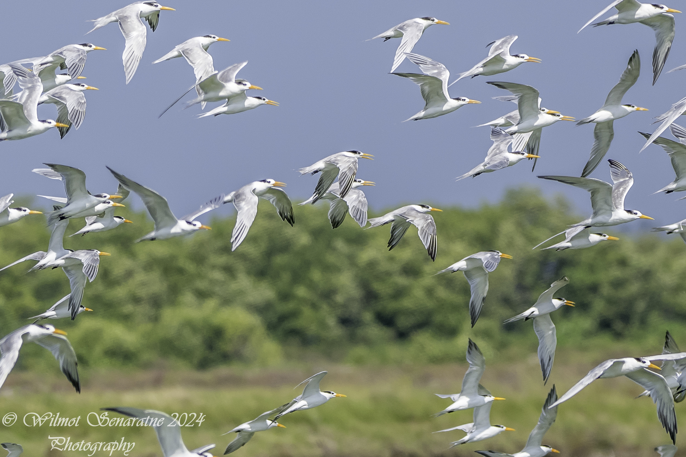

Thalasseus bengalensis
A black crest and a warm-coloured bill
The Lesser Crested Tern, Thalasseus bengalensis, is a graceful seabird in the gull and tern family, Laridae. Arabic names also describe it as the small crowned tern or Bengal tern. Its populations connect Arab breeding islands with distant feeding and resting shores, from Libya, the Red Sea and the Gulf to the Indian Ocean. It measures about 35–43 cm long, with a wingspan of approximately 88–105 cm. It is larger than the smallest, delicate terns, but less bulky than Greater Crested Tern, which may stand beside it in the same flock.
The adult has a long orange to yellow-orange bill, a black cap ending in a crest, and black feet. Its upperparts are grey and underparts white, with grey extending over the rump and centre of the tail. Outside the breeding season, the forehead becomes white, while black remains more evident behind the eye and on the nape. This change does not mean that the bird belongs to another species or is ill: it is part of the annual plumage cycle. Males and females look similar, and cap colour alone cannot distinguish them.
Separating similar terns
Direct comparison with Greater Crested Tern is helpful. The latter is bulkier and has a heavier bill that is usually more yellow, whereas Lesser Crested is slimmer and its bill tends towards orange. Adult Sandwich Tern normally has a black bill with a yellow tip. The rump and tail colour, bill shape and body proportions provide further useful evidence. Bill colour by itself does not establish identity in a photograph with strong lighting or an unnatural colour balance.
A juvenile carries markings on its wing and back feathers rather than the adult’s cleaner surfaces, and its bill may look paler or duller. In autumn, young birds that can already fly may continue following their parents and asking them for food. It is therefore important to distinguish downy chicks near an active colony from a fully feathered juvenile that has reached a distant shore. The latter’s presence does not establish that it hatched at the place where it was seen.
Fishing from the air and resting ashore
This tern searches for small fish and crustaceans in coastal waters, in and beyond the surf zone. It flies over the surface scanning the water and may hover briefly before plunging head first towards its prey, then returning to the air. It can also take food close to the surface. This behaviour sustains its marine life and allows parents to carry fish to chicks. Their success nevertheless depends on prey of a suitable size being available within waters they can reach.
It uses beaches, sandy islands and exposed resting sites, often mixing with other tern species. A breeding colony, a roost and a feeding flock do not necessarily occupy the same place. An island suitable for laying eggs also needs accessible marine food resources, while a winter beach holding hundreds of birds may never be used for nesting. Conserving the species therefore means protecting breeding islands, the waters that supply their food, and safe places used during movements between them.
Life inside the colony
The pair nests in a shallow ground scrape within colonies that can be extremely dense. The Saudi reference describes a usual clutch of one egg and incubation lasting 22–25 days, with both parents sharing incubation and care. Mediterranean sources give slightly different ranges and occasionally two eggs. The contents of a single nest should therefore not be treated as an absolute rule for every population. Exposed nests are concentrated on low ground, where the shade provided by a parent’s body becomes important in hot weather.
Chicks leave their individual nest sites after a few days and gather in crèches protected and fed by adult birds. Flight usually begins at about a month, with a range of 32–35 days in the Saudi reference. Flying does not end parental care: the Gulf ringing study published in 2017 describes young remaining dependent for additional months. This explains why a juvenile may beg for fish away from its natal island and why quiet surroundings and feeding areas remain important after egg laying has ended.
Arab countries on two marine routes
Libya is the main Mediterranean breeding centre for the regional population. Research programmes have studied its island colonies and coastal nesting around Benghazi, and ringing has linked them with the West African route. This does not imply breeding in every country the birds pass through. A regional Mediterranean assessment reports small numbers in winter counts along the coasts of Libya, Algeria and Morocco, while many birds travel farther. Such winter occurrence is different from the presence of a substantial breeding colony.
Farther east, Red Sea and Gulf of Aden reports document breeding in Egypt, Sudan, Saudi Arabia, Yemen, Djibouti and Somalia. In the Gulf, established colonies occur in Saudi Arabia and Bahrain, confirmed by joint ringing research rather than simply by lists of passing birds. Qatar’s current checklist describes the species as a resident breeder, with winter visitors, passage migrants and records in every month. The Saudi reference describes a common breeding migrant from April to October, with smaller numbers in other months. These accounts need not be made identical: each refers to a country and its local pattern.
Autumn movements and modern taxonomy
Libyan and Gulf birds do not necessarily follow the same winter route. Ringing studies show movement from the Libyan population through northwestern Africa towards wintering areas farther down the continent’s western side. Gulf research instead records birds ringed in Bahrain and Saudi Arabia reaching the Indian subcontinent. These are records of identifiable ringed individuals. They do not mean that every bird from a colony travels to one destination, or that every individual seen in November belongs to a particular breeding site.
AviList 2026 distinguishes the subspecies emigratus, breeding in Libya, from bengalensis, which breeds in the Red Sea and Gulf and connects with the Indian Ocean. Some older papers used different subspecies arrangements. Their field records of ringed birds remain informative even when the taxonomic names change. For an observer, practical identification should first establish the species. November offers opportunities to study non-breeding coastal groups, recording ages and rings that can be read from a distance without pursuing their wearers.
Protection from sand to sea
AviList 2026 lists Lesser Crested Tern as globally Least Concern. Nevertheless, concentrating many nests on a limited number of islands creates considerable local vulnerability. Coastal construction, damage to islands, egg collection, introduced predators, pollution and disruption of food supplies can affect an entire colony. Low-lying nesting places also need attention to inundation and shoreline change. Abundance across the world is not a justification for losing one of the species’ Arab breeding or resting sites.
Visits should follow permitted routes and remain far enough away to avoid flushing adults or causing chick groups to rush away. Observers should not land on a breeding island merely because it seems uninhabited by people, nor separate a juvenile from its group to finish a photograph. A clearly visible ring can be documented with binoculars or a long lens and reported to the relevant ringing organisation. Protecting this tern requires continuity between countries: the Arab breeding island, migration stopover and winter shore are interconnected parts of the same bird’s life.
Photo: Wilmot Senaratne (wilmotsenaratne) / iNaturalist (CC0 1.0)